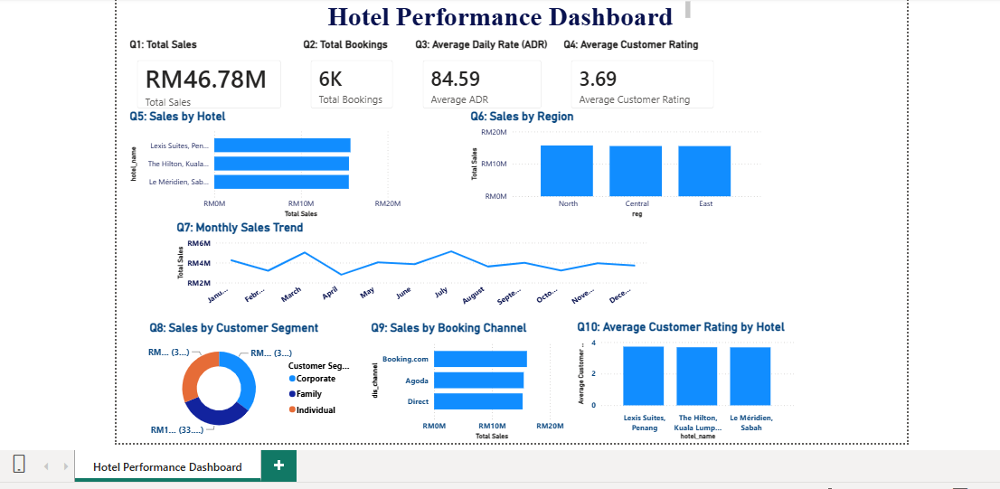
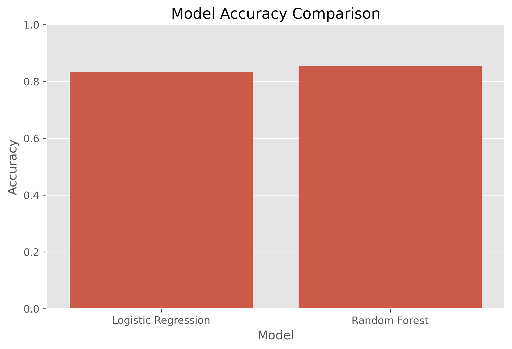
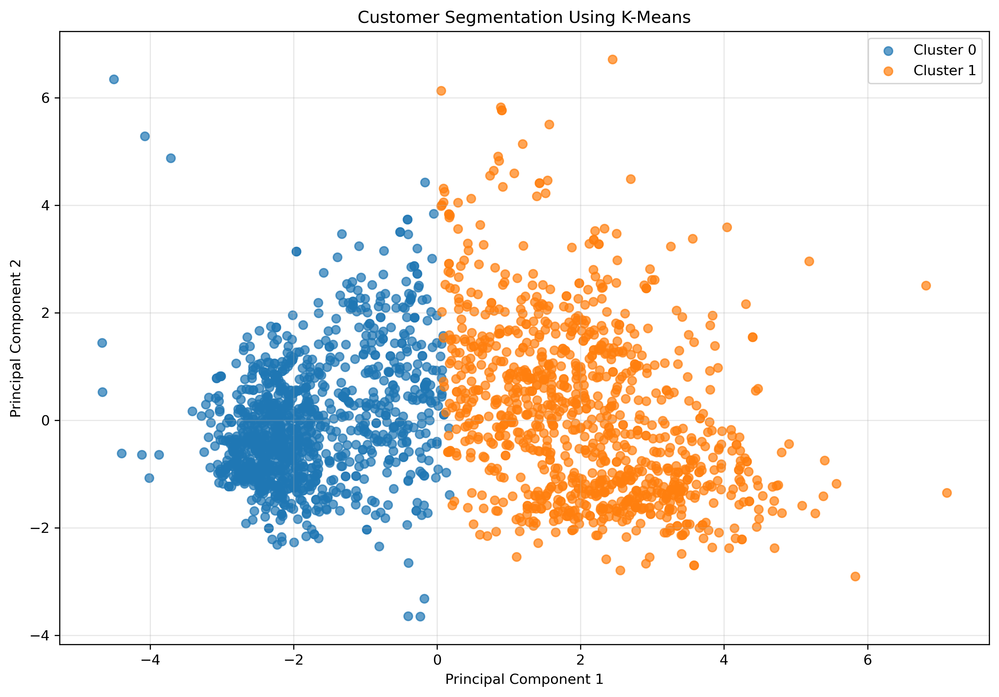

Lahore, Pakistan
Abdul Manan Khan
Data Analytics, BI & AI Automation
I work across the data pipeline — from raw data to dashboards, models, and automated workflows — building practical systems that turn information into action.
// about
About
I'm a BS Data Science student at the University of Management and Technology, Lahore, working at the intersection of data analytics, business intelligence, and AI automation.
My work spans the full pipeline: cleaning and analyzing data in Python and SQL, building dashboards and reports in Power BI, training and evaluating machine learning models, and connecting AI-powered workflows to real business processes with tools like Voiceflow and Make.com.
I'm currently applying that range to a point-of-sale system for a veterinary pharmacy — moving from analysis and automation into building the operational software businesses actually run on.
// skills
Skills
Organized by how I actually use them, not a single list.
Data analytics
Business intelligence
Machine learning & AI
Automation & workflows
Programming & tools
Familiar with
// experience
Experience
Two internships, both in 2026.
- Performed data cleaning, exploratory analysis, and feature engineering using Python, Pandas, NumPy, Matplotlib, and Seaborn.
- Developed a credit card approval prediction workflow using preprocessing, categorical encoding, feature scaling, Logistic Regression, and Random Forest.
- Applied PCA and K-Means clustering for customer segmentation, evaluating cluster quality using the Elbow Method and Silhouette Score.
- Analyzed and prepared datasets through data cleaning, transformation, and validation for operational reporting.
- Designed interactive Power BI dashboards using KPIs, charts, filters, and slicers to visualize operational data.
- Used Power Query and DAX for data transformation and reporting, collaborating with the MIS team to translate data into business insights.
// projects
Projects
Selected case studies across data analytics, business intelligence, machine learning, AI automation, and business systems.

UrbanEdge AI real estate assistant
An AI-powered lead qualification and booking workflow for a fictional real-estate business, connecting a conversational assistant to automated backend records.
View case study
Hotel performance Power BI dashboard
A multi-page Power BI dashboard tracking sales, bookings, ADR, and customer ratings across hotels, regions, and booking channels.
View case study
Credit card approval prediction
A classification model predicting credit card approval, comparing Logistic Regression and Random Forest with confusion matrix evaluation.
View case study
Customer segmentation
An unsupervised learning project grouping customers into behavioral segments using PCA, K-Means, and silhouette analysis.
View case studyVeterinary pharmacy POS system
In developmentA point-of-sale system built to solve real operational needs for a veterinary pharmacy — inventory, sales, and billing for veterinary medicine products.
Implemented so far
- Add your completed features here
Tech stack
- Add your actual stack here
// education
Education
Where I can help
// contact
Let's talk.
Open to opportunities in data analytics, BI, and AI automation — or a conversation about a project.